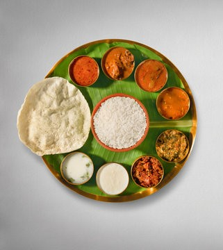
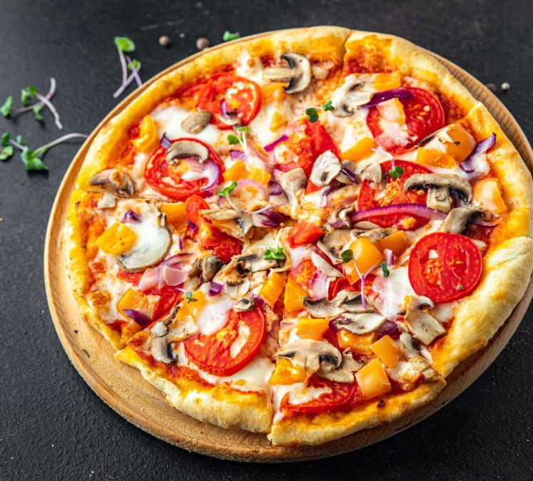

MENU ITEMS
- MEALS
- PIZZA
- BURGER
- COCACOLA
- MINI TIFFEN

PRICE: Rs.80
Safari Junction takes pride in our special meals, where each dish embodies culinary excellence and global inspiration. From tender Moroccan-spiced lamb chops to flavorful South Asian tandoori chicken, every bite is a journey through vibrant flavors and meticulous preparation. Our chefs blend tradition with innovation, ensuring each plate at Safari Junction is a testament to quality and creativity.
Join us for an unforgettable dining experience where every special meal tells a story of culinary craftsmanship and adventurous spirit.

PRICE: Rs.199
Pizza at Safari Junction is a celebration of indulgence and flavor innovation. Our artisanal pizzas are crafted with the finest ingredients, from hand-stretched dough to premium cheeses and fresh toppings sourced locally and globally. Whether you prefer a classic Margherita with its perfect balance of tomato, mozzarella, and basil, or crave a bold fusion creation like our spicy peri-peri chicken with charred peppers and cilantro, each slice promises a symphony of taste sensations.
Baked to perfection in our wood-fired oven, our pizzas are a testament to both tradition and creativity, offering a culinary experience that delights pizza enthusiasts and adventurous eaters alike.

PRICE: Rs.150
At Safari Junction, our burgers are a tribute to comfort and culinary creativity. Each burger is a masterpiece of flavor, starting with juicy, hand-formed patties made from the finest cuts of meat or plant-based alternatives for our vegetarian guests. Topped with a variety of artisanal cheeses, crispy bacon, farm-fresh vegetables, and house-made sauces, every bite is a symphony of textures and tastes. Whether you're savoring a classic cheeseburger with melted cheddar and caramelized onions or exploring our signature Safari Burger with avocado and chipotle aioli, our commitment to quality and satisfaction is evident in every bite.
Pair your burger with our hand-cut fries or a refreshing salad, and experience the perfect blend of indulgence and culinary craftsmanship at Safari Junction.
PRICE: Rs.40
At Safari Junction, we proudly serve Coca-Cola, the iconic refreshment that complements every dining experience with its crisp, effervescent taste. Served ice-cold in its classic contour bottle or from the fountain, Coca-Cola at Safari Junction embodies the perfect harmony of sweetness and carbonation. Whether enjoyed alongside our savory dishes or as a refreshing pick-me-up on its own, Coca-Cola enhances every moment with its timeless appeal and unmatched quality. Join us at Safari Junction and savor the simple pleasure of Coca-Cola, a beverage that brings people together and adds a touch of refreshment to every visit.

PRICE: Rs.80
At Safari Junction, our Mini Tiffin is a delightful journey through South Indian flavors, perfect for those seeking a variety of tastes in a single meal. This culinary ensemble features a colorful array of mini versions of traditional dishes like idli, dosa, vada, and pongal, each meticulously prepared to preserve authentic flavors and textures. Accompanied by an assortment of chutneys, sambar, and a steaming cup of filter coffee, our Mini Tiffin offers a balanced and satisfying dining experience that celebrates the rich culinary heritage of South India. Join us at Safari Junction to indulge in this miniature feast, where every bite tells a story of tradition, taste, and culinary finesse.